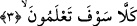

2. Nihâyet kabirleri ziyaret ettiniz,
Oradaki ölülerinizi de sayıya dâhil ettiniz, böylece ölülerinizin çokluğuyla övünmeye
kadar gittiniz. Öyle bir noktaya geldiniz ki mezarları ve ölüleri saymaya başladınız.
Onların ölülerden bahsetmeye başlamaları, “kabir ziyâreti” tâbiriyle ifâde edilerek,
ondan kinâye yapılarak kendileriyle alay edilmiştir. Tıybî der ki: Bu ifâdenin alay yollu
olması şundandır. Bilindiği üzere kabir ziyâreti ölümü hatırlamak, dünya sevgisini
atmak, övünmeyi ve böbürlenmeyi terketmek için meşrû kılınmıştır. Onlar ise bunun tam
tersini yapıyorlar, kabir ziyâretini, daha fazla katı olmak, dünya muhabbetine ve
çoklukla övünmeye daha fazla dalmak için yapıyorlar.
Âyet-i kerimedeki ifâdeler, yaşanmış bir vak‘ayı haber verme şeklindedir; ama
aslında böyle yapanları azarlama ve ayıplama mânâlarını ihtivâ etmektedir. Bu tefsîre
göre gâye mugayyâya dâhil olur.
Bazı âlimlere göre âyetin mânâsı şöyledir: Mal ve evlat çokluğu ile övünmek sizi
ölünceye ve kabre girinceye kadar oyaladı. Ömürlerinizi dünya peşinde koşarak zâyî
ettiniz ve sizin için çok mühim olan âhiretiniz için çalışmaktan yüz çevirdiniz. Bu
mânâya göre “kabirleri ziyâret”ten maksad ölümdür, tekâsür mal ve evlâd çokluğuyla
övünmektir.
“Tekâsür”, mal ve çocuk sayısını artırmak, bu hususta yarışa girmektir. Nitekim bir
sahâbînin rivâyetine göre Rasûlullah Efendimiz (s.a.) bu âyeti okumuş ve sonunda şöyle
buyurmuştur: “Ademoğlu malım! malım! deyip duruyor. Yiyip tükettiğinden, giyip
eskittiğinden ya da tasadduk edip sevap kazanmak üzere önden gönderdiğinden başka
senin malın mı var ki?” [201]
Bu âyette onların öldükten sonra dirileceklerine de işâret vardır. Çünkü ziyâret eden
kişi mukîm, kalıcı değildir, gelip geçicidir. Ömer b. Abdulaziz (r.a.) bu âyet-i kerimeyi
okumuş ve şöyle demiştir: “Ben kabirde kalışı ancak bir ziyâret olarak görmekteyim.
Ziyâretçinin mutlaka evine geri dönmesi gerekir. Kabri ziyârete giden kişinin döneceği
yer de ya Cennettir, ya da Cehennem!”
Bu âyet-i kerimede, dünyadan sakındırma, âhiret ve ölüme hazırlanmaya teşvik vardır.
Ecelin gece baskını yaptığı gün,
Elbet dünyadan gitmek gerekir.
Eğer gönül, dünya esiri değilse,
O âleme kolayca gitmek mümkün!
3. Hayır! Yakında bileceksiniz!
“Kellâ: Hayır, öyle değil!” kelimesi, onların çoklukla övünmelerinin yanlış olduğunu